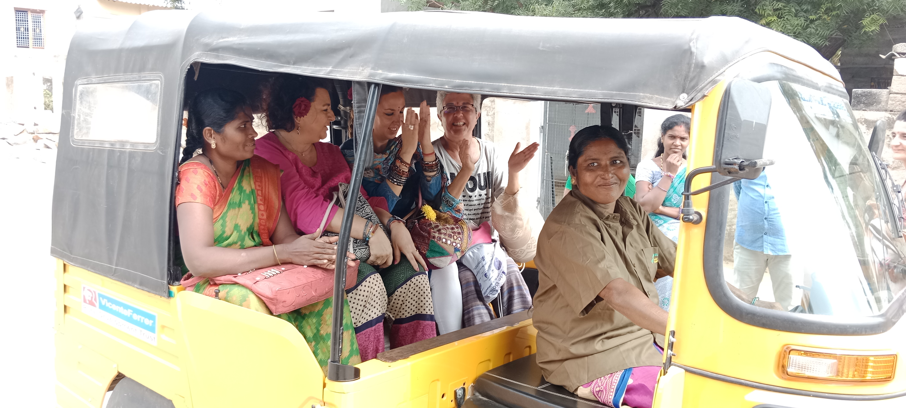

Skill Training

Rural Development Trust (RDT) has embarked on a transformative initiative aimed at empowering women in rural villages through skill development programs. Recognizing the potential for personal and community development, RDT extends training opportunities to women who express an interest in acquiring specific skills. These skill sets encompass a diverse range, including driving, bookbinding, sanitation napkin production, and tailoring. The overarching goal of these training programs is twofold: to foster personal development among the participating women and contribute to the overall welfare and progress of the village communities. By offering training in these essential skills, RDT seeks to enhance the employability and self-sufficiency of women, enabling them to contribute meaningfully to their households and communities.
The training programs are designed to cater to the varied interests and aptitudes of women, recognizing the importance of tailoring the skill development initiatives to the unique needs of each individual. Whether it is learning the intricacies of driving, mastering bookbinding techniques, engaging in the production of sanitation napkins, or acquiring tailoring skills, the women are provided with comprehensive training that equips them with practical expertise.
Success Story:
In the heart of P. Yaleru Village, nestled under the compassionate umbrella of Rural Development Trust (RDT), a remarkable woman named Manorama has shattered gender stereotypes as the sole female auto driver in the Atmakuru area. Married and blessed with the support of her husband and two children, Manorama embodies the spirit of resilience and empowerment, seamlessly balancing her professional and personal responsibilities with the aid of RDT's transformative activities.
The journey began when RDT recognized the potential within Manorama and envisioned the impact she could make as a woman breaking barriers in a male-dominated profession. RDT, as part of its commitment to empowering women, provided Manorama with a comprehensive three-month training program to equip her with the skills required to navigate the roads as an auto driver. Crucially, the training extended beyond the technical aspects of driving, addressing the unique challenges and circumstances that a woman might face in this profession. RDT, cognizant of the societal dynamics and safety considerations, tailored the training to empower Manorama to navigate her role with confidence and resilience.
With unwavering support from her family and the skills acquired through RDT's training, Manorama seamlessly blends her roles as a mother, wife, and pioneering auto driver. Her ability to manage both professional and personal aspects of her life serves as a testament to the transformative impact of RDT's initiatives in the village. Recognizing the potential for economic empowerment, RDT provided Manorama with an auto worth Rs. 3,75,000, an investment that extended beyond the vehicle itself. This gift became a symbol of financial independence and a catalyst for income generation for Manorama and her family. By providing the auto at no cost, RDT eliminated a significant financial barrier, enabling Manorama to embark on her journey as an auto driver without the burden of a hefty initial investment.
While empowering Manorama, RDT remains vigilant about her safety and well-being. In a proactive measure, RDT has imposed a restriction, prohibiting her from driving the auto after 7:00 pm at night. This precautionary step underscores RDT's commitment to ensuring a secure and conducive environment for women to thrive in unconventional professions. Manorama's story transcends the realm of personal achievement; it becomes a beacon of inspiration for the entire community, challenging preconceived notions and redefining societal norms. Her presence on the roads of P. Yaleru Village not only symbolizes empowerment but also catalyzes a shift in perceptions about the roles women can play in traditionally male-dominated fields.